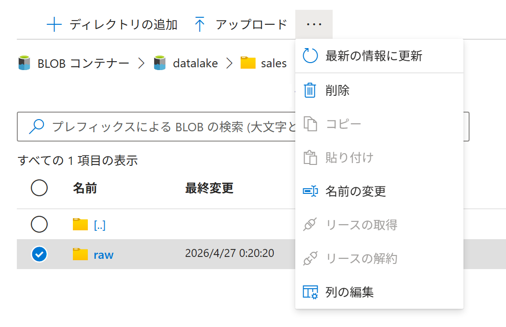
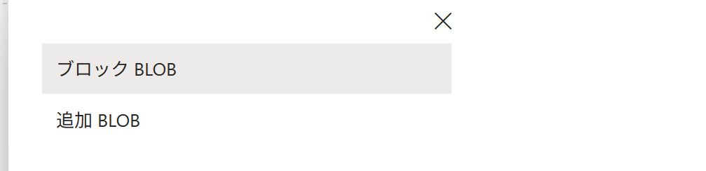
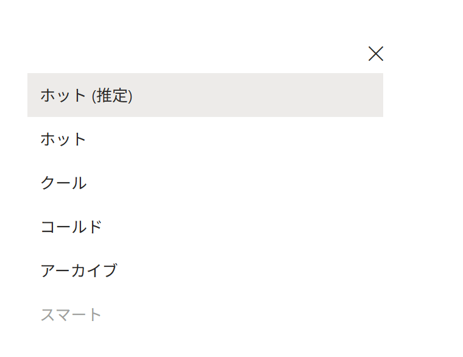
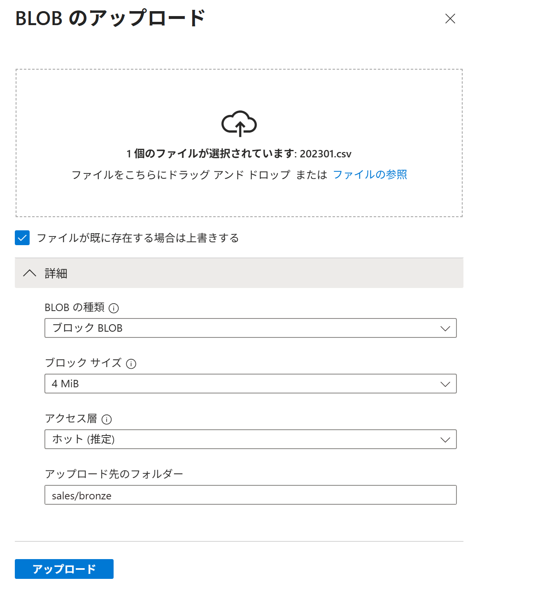
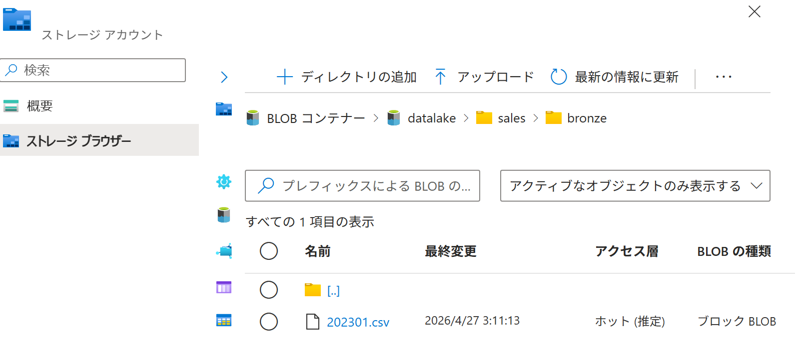
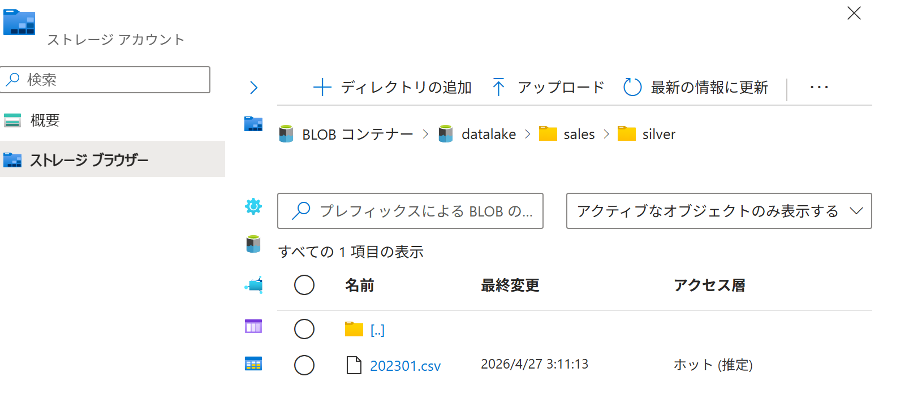

Azure ポータル で BLOB（ADLS Gen2） を作成する
適用対象: ✔️ ストレージ アカウント
この演習では、Azure ポータル を使用して ADLS Gen2 の BLOB を作成します。
所要時間: 約 15 分
先行の演習
この演習を始める前に コンテナー（ADLS Gen2） を作成する を完了してください。
タスク 1: ディレクトリ の作成
ディレクトリが単独で存在できることを確認します。
- ポータルメニューから [ストレージ アカウント] を選択します。
storagev2msaz2を選択します。- サービスメニューから ストレージ ブラウザー ＞ [BLOB コンテナー] を選択します。
datalakeを選択します。- [＋ ディレクトリの追加] を選択します。
salesを入力して、[保存] を選択します。- [sales] を選択します。
- [＋ ディレクトリの追加] を選択します。
rawを入力して、[保存] を選択します。- 🔘（raw の左横） を選択します。
- コマンドバーで [名前の変更] を選択します。

bronzeを入力して、[保存] を選択します。- 作成したディレクトリが消失しませんでした。
ストレージアカウントは、ADLS Gen2 では 階層型名前空間 で BLOB を管理します。

フラットな名前空間ではディレクトリは本物のディレクトリではなく、ディレクトリっぽく見せているだけでした。 一方、ADLS Gen2 ではディレクトリが実体として存在するため、空のディレクトリも保持できます。
| フラットな名前空間 | 階層型名前空間 |
|---|---|
| データをディレクトリ階層ではなく、平らな名前の集合として扱う方式。 ディレクトリは本物のディレクトリではなく、BLOB 名の / で区切られた部分をディレクトリっぽく見せている。 |
データをPCのファイルシステムのように、ディレクトリ階層で管理できる方式。 |
タスク 2: BLOB の作成
データ分析用 BLOB を模擬的に作成します。
- 模擬のデータ分析用データをローカルにダウンロードします。
202301.csv - ポータルメニューから [ストレージ アカウント] を選択します。
storagev2msaz2を選択します。- サービスメニューから ストレージ ブラウザー ＞ [BLOB コンテナー] を選択します。
datalakeを選択します。- [↑ アップロード] を選択します。
- [▽ 詳細] を選択します。

- BLOB の種類 で [ブロック BLOB] を選択します。

- アクセス層 で [ホット (推定)] を選択します。

選べる選択肢は変動します。クール / コールド / アーカイブは BLOB をすぐに削除してもコストが発生します（最低利用料金のようなもの）。 - アップロード先のフォルダー で
sales/bronzeを入力します。 - [ファイルの参照] を選択します。
- ダウンロードした
202301.csvを選択して [開く] を選択します。 - [ファイルが既に存在する場合は上書きする] のチェックボックスにチェックを入れます。

- [アップロード] を選択します。
- 完了を待ちます。
- [sales] を選択します。
- [bronze] を選択します。
202301.csvが一覧に表示されます。- アップロードしたファイルのファイル名 が一覧に表示されます。

- BLOB の種類 と アクセス層 を確認します。
タスク 3: BLOB のコピー
データ分析用 BLOB を模擬的にコピーします。
Silver は Bronze の生データを検証、クレンジング、変換した中間層として作成するのが一般的であり、今回はあくまで模擬体験です。
- ポータルメニューから [ストレージ アカウント] を選択します。
storagev2msaz2を選択します。- サービスメニューから ストレージ ブラウザー ＞ [BLOB コンテナー] を選択します。
datalakeを選択します。salesを選択します。- [＋ ディレクトリの追加] を選択します。
silverを入力して、[保存] を選択します。bronzeを選択します。- 🔘（202301.csv の左横） を選択します。
- コマンドバーで [コピー] を選択します。
[..]を選択します（一つ上のディレクトリに移動）。silverを選択します。- コマンドバーで [貼り付け] を選択します。
sales/silver/202301.csvが存在することを確認します。
タスク 4: 作成されたリソースの確認
データ分析用 BLOB をインターネット経由でダウンロードできることを確認します（匿名アクセスが許可されているため）。
- ポータルメニューから [ストレージ アカウント] を選択します。
storagev2msaz2を選択します。- サービスメニューから ストレージ ブラウザー ＞ [BLOB コンテナー] を選択します。
datalakeを選択します。- 前のタスクでコピーしたファイル
sales/silver/202301.csvを選択します。 - URLの 右端の [コピー] ボタン を選択します。 https://storagev2msaz2.blob.core.windows.net/datalake/sales/silver/202301.csv
- ブラウザで新しいタブを開いてコピーしたURLをアドレスバーに貼り付けます。
- ブラウザで
202301.csvのダウンロードが開始されることを確認します。